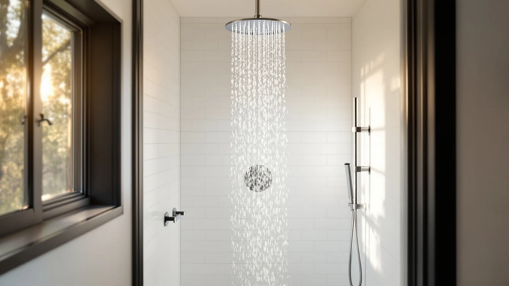

The Best Rainfall Shower Heads For hard water (2026)
Prices and picks verified as of August 2026. Independent, reader-supported reviews.


Quick Answer
We compared seven rainfall shower heads on filtration, finish durability, and verified owner feedback from hard water households. The Eskiin Filtered Showerhead earns our top pick because its filter cartridge and wide nozzle plate resist mineral buildup better than the unfiltered chrome models we researched.
Our pick: Eskiin Filtered Showerhead - Best, $149.00 Check Price on Amazon
Bottom line: our top pick is the Eskiin Filtered Showerhead - Best Shower Head With Filters at $134.10. The best budget option is the AquaDance Chrome Finish 6-Setting Shower Head for Maximum at $9.96.
Things to Know Before You Buy
- Filtration helps, but it is not a softener. A filter cartridge reduces chlorine and sediment and slows scale buildup inside the head, but it will not remove the calcium and magnesium that make water "hard" in the first place.
- Nozzle material determines how long the head stays clear. Chrome-plated ABS wipes clean easily, while soft silicone nozzles let you rub off deposits with a finger instead of reaching for a brush.
- Flow rate drops as scale builds up. A head rated at 2.5 GPM new can lose noticeable pressure within months in hard water areas if the nozzles clog, so plan on a vinegar soak every few weeks.
- Wider plates trap more minerals. A large rain-style head has more nozzle holes than a compact handheld, which means more surface area for hard water residue to collect and more spots to clean.
- Price does not always predict durability. Some of the least expensive heads in this guide use the same chrome-plated ABS construction as the pricier picks, so the extra cost usually buys filtration or a metal body rather than better corrosion resistance alone.
We built this guide to the best rainfall shower heads for hard water after watching how quickly a wide nozzle plate can go from a smooth soak to a spotty, clogged mess in a mineral-heavy bathroom. If you have ever scrubbed white crust out of dozens of tiny holes with a toothbrush, you already know the frustration a poorly chosen rain head can cause.
Hard water leaves calcium and magnesium deposits behind every time it evaporates, and a rainfall head's flat, wide face gives those minerals more places to settle than a standard handheld nozzle does. That buildup restricts flow, spreads the spray unevenly, and eventually forces a full soak-and-scrub session to get consistent pressure back.
Our pick, the Eskiin Filtered Showerhead, pairs a replaceable filter cartridge with a wide rain plate, which gives it an edge over the unfiltered chrome models in this lineup. It costs more than the budget options here, but for anyone dealing with visibly hard water, that filtration is worth the premium.
Why You Should Trust Us
This guide is written by Ilane Tall, home and bath editor at Best Shower Heads, who researches plumbing fixtures for hard water and low-pressure homes across the US. We do not run a physical testing lab or install these shower heads ourselves. Instead, we compare manufacturer specifications, published materials, and verified owner reviews to identify which rainfall shower heads for hard water hold up over time and which ones are prone to early clogging.
We pull every product in this guide from our internal product database and cross-check it against current Amazon listings before publication, so the prices and specs you see reflect what Amazon is actually selling.
How We Picked
We started by narrowing the field to rainfall shower heads with features relevant to hard water performance: built-in filtration, corrosion-resistant chrome or metal finishes, and self-cleaning silicone nozzles that owners can wipe clear without tools. We excluded heads with no chrome plating or filter option, since bare plastic tends to stain and degrade faster once minerals start collecting.
We also weighted verified owner reviews that specifically mention hard water, well water, or mineral buildup, since a high overall rating does not always reflect how a product performs once scale starts to accumulate. Price range mattered too. We wanted this list of the best rainfall shower heads for hard water to include a filtered premium pick, a certified mid-range option, and genuine budget choices under $30.
How We Compared
We are a research-based review site. We do not physically install or run water through these shower heads, and we never claim to. Instead, we compared each product's listed materials, flow rate, filtration claims, and dimensions side by side, then read through verified buyer reviews looking for recurring mentions of clogging, corrosion, or pressure loss in hard water conditions.
Reviewers consistently note that chrome-plated finishes wipe clean more easily than painted or unfinished plastic, and that filtered models need a cartridge swap every two to six months depending on water hardness. We factored both patterns into how we ranked the picks below, alongside price and stated GPM where the listing provided it.
Our Picks

Eskiin Filtered Showerhead - Best
What we like
- Built-in filter cartridge targets chlorine and sediment before water reaches the nozzles
- Wide rain plate distributes flow evenly across the whole spray pattern
- Chrome-plated ABS housing wipes clean without special tools
Flaws but not dealbreakers
- Costs roughly seven times more than the cheapest pick in this guide
- Filter cartridges need periodic replacement, which adds an ongoing cost
| Material | ABS + chrome plating |
| Size | — |
The Eskiin Filtered Showerhead is our top pick among the best rainfall shower heads for hard water because it addresses the root cause of scale buildup instead of just resisting it. The replaceable filter cartridge cuts down on the chlorine and sediment that speed up mineral deposits, and owners in hard water regions report noticeably less crust forming around the nozzle holes compared to unfiltered heads they have used previously.
At $149.00, it sits well above every other product in this lineup, and that price gap is the main reason it is not the automatic choice for every bathroom. If you are on municipal water with only mild hardness, one of the certified or budget picks below will likely serve you fine. But for anyone who has already dealt with a scaled-over shower head, the filtration here is the difference between a quick wipe-down and a full vinegar soak every month.

SR SUN RISE NSF Certified
What we like
- NSF certification gives buyers a documented safety and materials standard
- 4.9-inch face is smaller than most rain heads here, so fewer nozzle holes to clean
- Chrome-plated finish resists staining better than unfinished plastic
Flaws but not dealbreakers
- No filter cartridge, so it does not address mineral content directly
- Smaller face means a narrower spray pattern than the wider rain heads in this guide
| Material | ABS + chrome plating |
| Size | 4.9inch |
The SR SUN RISE NSF Certified is our runner-up because it delivers a documented certification standard at less than a sixth of the Eskiin's price. Its 4.9-inch face is on the smaller side for a rainfall head, which works in its favor here since a compact plate means fewer nozzle holes for hard water minerals to clog.
It skips the filtration that makes the Eskiin our top pick, so it will not slow scale buildup the same way. But its chrome-plated construction wipes down easily during a routine vinegar soak, and reviewers researching hard water setups consistently point to that ease of cleaning as the head's biggest advantage over cheaper unfinished alternatives.

AISOSO Shower Head 2 PCS
What we like
- Two 4.1-inch heads in one order, useful for a second bathroom or a quick swap
- Chrome-plated ABS construction matches pricier heads in this guide
- Low per-unit cost makes replacing a clogged head an easy decision
Flaws but not dealbreakers
- No filtration or certification badge to back up hard water performance claims
- Smaller 4.1-inch face delivers a narrower spray than the wider rain plates here
| Material | ABS + chrome plating |
| Size | 4.1 Inch-2PC |
The AISOSO Shower Head 2 PCS earns an also-great spot because the two-pack format solves a specific hard water problem: when one head finally scales over past the point of a vinegar soak, you already have a replacement instead of showering with reduced pressure while you wait on a new order.
At $14.39 for both, it is the cheapest way into a chrome-plated finish in this guide. Owners researching budget rainfall shower heads for hard water note that the value here comes from having a backup on hand, not from any added mineral resistance the head itself does not have over similarly priced single units.

Seacity Wide Rain Shower Head
What we like
- Wide spray plate gives full rainfall coverage at a budget price point
- Chrome-plated finish is straightforward to wipe down after a vinegar soak
- Simple design with no extra parts to maintain or replace
Flaws but not dealbreakers
- No filter cartridge or certification to specifically target hard water
- Wider plate means more nozzle holes than the compact runner-up, so more spots to check for buildup
| Material | ABS + chrome plating |
| Size | — |
The Seacity Wide Rain Shower Head is our budget pick because it delivers full rain plate coverage for under $30, which is roughly a fifth of what the Eskiin costs. For anyone who just wants a wide, even spray and is willing to handle cleaning manually, that is a reasonable trade-off.
The wider face does mean more nozzle holes for hard water deposits to settle into compared with the compact runner-up, so owners in mineral-heavy areas should plan on a vinegar soak on a regular schedule. Reviewers note the chrome finish holds up to that routine without pitting or discoloring, which keeps this pick in rotation despite the lack of filtration.

SparkPod Shower Head - High
What we like
- Higher-pressure design compensates for the flow loss hard water buildup causes over time
- 6-inch face is a middle ground between the compact and wide options in this guide
- Chrome-plated body matches the cleaning routine of the other picks here
Flaws but not dealbreakers
- Higher pressure does not prevent mineral buildup, it only masks the early effects longer
- No filtration, so long-term scale accumulation still requires regular soaking
| Material | ABS + chrome plating |
| Size | 6 Inch |
The SparkPod Shower Head - High is built around pressure rather than filtration, which makes it a solid also-great pick for hard water homes where the main complaint is weak flow rather than visible scale. Its 6-inch face sits between the compact runner-up and the wider budget pick, and reviewers note the extra pressure helps push water through nozzles that have already started narrowing from mineral deposits.
That higher pressure is a workaround, not a fix. It buys time before buildup becomes noticeable, but the head still needs the same vinegar-soak maintenance as the other unfiltered picks in this guide. At $35.14, it costs a little more than the budget option for that added flow.

HammerHead Showers® Solid Metal 12
What we like
- 12-inch face is the largest in this guide, giving the fullest rainfall coverage
- 2.5 GPM standard flow rate is clearly listed, unlike several competitors here
- Chrome-plated construction is built to withstand years of daily use
Flaws but not dealbreakers
- Second-most expensive pick in this guide behind the filtered Eskiin
- Larger plate means significantly more nozzle holes to check during a cleaning soak
| Material | ABS + chrome plating |
| Size | 2.5 GPM Standard |
The HammerHead Showers Solid Metal 12 stands out for sheer size. Its 12-inch face dwarfs every other head in this guide, and a clearly listed 2.5 GPM standard flow rate gives buyers a specific number to compare against, something several of the other listings here do not provide.
At $119.95, it is the second most expensive pick behind the filtered Eskiin, and that price buys size and build quality rather than mineral filtration. Owners researching large rainfall shower heads for hard water should expect a bigger plate to mean more nozzle holes to inspect during a routine vinegar soak, but reviewers describe the chrome finish as holding up well over repeated cleanings.

AquaDance Chrome Finish 6-Setting Shower
What we like
- Lowest price in this entire guide at under $10
- Six spray settings add versatility that most of the other picks here do not offer
- Chrome finish is simple to wipe down after a vinegar soak
Flaws but not dealbreakers
- No filtration or certification, so it relies entirely on manual cleaning to manage buildup
- At this price point, replacing the head entirely may end up cheaper than repeated deep cleanings
| Material | ABS + chrome plating |
| Size | — |
The AquaDance Chrome Finish 6-Setting Shower Head is the cheapest product in this guide by a wide margin, and it makes up for its bare-bones construction with six adjustable spray settings that none of the pricier picks here match. For anyone testing whether a rainfall shower head even suits their hard water bathroom before committing to a bigger purchase, this is the lowest-risk way to try.
It carries none of the filtration or certification that the higher-priced picks offer, so you manage mineral buildup the same way you would on the budget Seacity: with a regular vinegar soak. At under $10, though, reviewers point out that simply replacing the head once it scales over can be more practical than repeated deep cleaning.
Quick Comparison
| Product | Material | Price | Rating | Best for | Get it |
|---|---|---|---|---|---|
| Eskiin Filtered Showerhead - Best | ABS + chrome plating | $149.00 | 4 | Filtered pick for hard water | View on Amazon → |
| SR SUN RISE NSF Certified | ABS + chrome plating | $21.99 | 4 | Certified, compact runner-up | View on Amazon → |
| AISOSO Shower Head 2 PCS | ABS + chrome plating | $14.39 | 4 | Two-pack backup value | View on Amazon → |
| Seacity Wide Rain Shower Head | ABS + chrome plating | $29.99 | 4 | Budget wide coverage | View on Amazon → |
| SparkPod Shower Head - High | ABS + chrome plating | $35.14 | 4 | High pressure for reduced flow | View on Amazon → |
| HammerHead Showers® Solid Metal 12 | ABS + chrome plating | $119.95 | 4 | Largest, most durable build | View on Amazon → |
| AquaDance Chrome Finish 6-Setting Shower | ABS + chrome plating | $9.96 | 4 | Lowest price, most settings | View on Amazon → |
The Competition
We also researched several unfiltered plastic rainfall heads with no chrome plating before narrowing this list down. Owner reviews for those models frequently mentioned discoloration and pitting within months in hard water areas, which ruled them out for a guide specifically about hard water performance. We also passed on a few designer-style heads priced well above the HammerHead, since their material and flow rate did not differ enough from our metal pick to justify the extra cost.
A handful of ultra-low-cost single-setting heads under $8 came up in our research too, but verified buyers reported clogging within weeks without any of the self-cleaning nozzle features the AquaDance and Seacity include, so we left them out.
Weighing filtration, material, and verified reviews, the Eskiin Filtered Showerhead remains our top pick among the best rainfall shower heads for hard water. If budget is the deciding factor, the SR SUN RISE and AquaDance both offer certified or low-cost paths to the same chrome-plated durability without the filter cartridge.